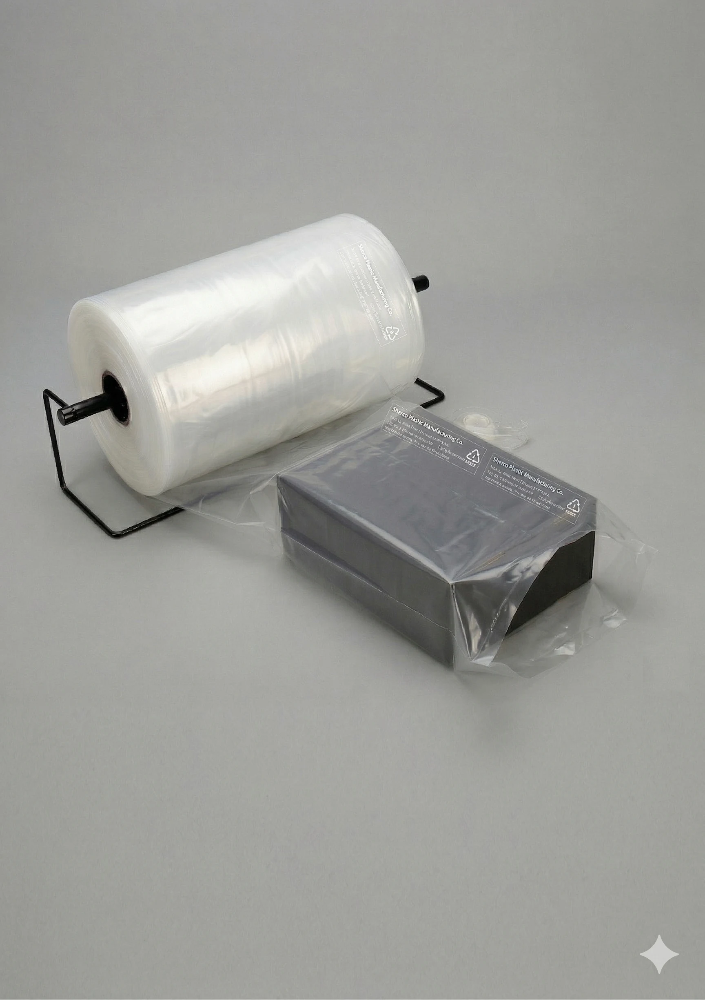

LDPE lay-flat polythene tubing rolls in any custom width. Ideal for bag-making and product wrapping. Direct manufacturer supply from Pune since 1970.

Polythene tubing rolls — also called lay-flat tubing or lay-flat polythene tube — are seamless tubular LDPE film rolls supplied in flat, rolled form. When unrolled and cut to length, lay-flat tubing can be sealed at one or both ends to create custom-size bags, or used as an open tube for wrapping products. Bharat Plastic Manufacturing Co. manufactures polythene tubing rolls in Pimpri MIDC, Pune, supplying packaging converters, industrial manufacturers and agricultural buyers across Maharashtra and India.
Lay-flat tubing is the preferred raw material for packaging converters and manufacturers who make their own bags on-site to custom lengths. It is also widely used for wrapping long or irregularly shaped products — the tube is slid over the item, cut to length and heat-sealed. Our tubing is available in widths from 1 inch to 100+ inches, in thicknesses from 50 microns to 300+ microns, in LDPE (standard and low-density grades). Custom colours and UV-stabilised formulations are available on request.
Our lay-flat polythene tubing is extruded in continuous tube form, then flattened and wound onto rolls. The flat tube can be heat-sealed and cut at any length to produce open-mouth bags of any size, making it a highly cost-effective packaging solution for industries with varied product dimensions.
We supply polythene tubing in natural/clear LDPE as standard, with coloured and printed tubing available on minimum order quantities. Roll weights and spool lengths are customised to your production line requirements.
All products carry mandatory statutory printing as per Government of India norms — including EPR number, manufacturer name & address, product category, thickness and all other required information. Minimum thickness is 50 microns as per the Plastic Waste Management (Amendment) Rules. Our EPR registration ensures full compliance with extended producer responsibility requirements.
| Material | LDPE — Low-Density Polyethylene |
| Thickness | 50 microns to 250+ microns (as per Govt. norms, custom) |
| Lay-Flat Width | 1 inch to 100 inches (custom) |
| Colour | Natural / Clear, custom colours |
| Form | Lay-flat roll, on spool or core |
| Roll Dimensions | Custom length (metres/feet) and width as per requirement |
| Certifications | ISO 9001:2015, EPR Registered |
Send us your requirement and we will respond promptly via WhatsApp with pricing, MOQ and availability.